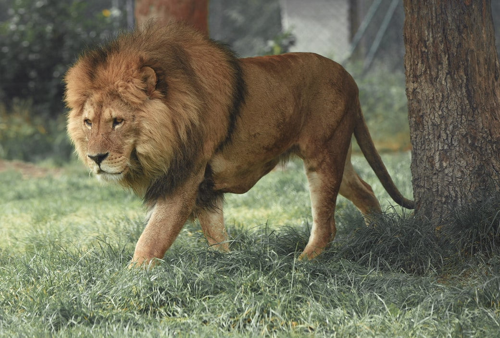

Sư tử - Lion
Sư tử (Panthera leo), (tiếng Anh: Lion) là một trong những đại miêu trong họ Mèo và là một loài của chi Báo. Được xếp mức sắp nguy cấp trong thang sách Đỏ IUCN từ năm 1996, các quần thể loài này ở châu Phi đã bị sụt giảm khoảng 43% từ những năm đầu thập niên 1990. Trong văn hóa phương Tây, sư tử được mệnh danh là "chúa sơn lâm" (King of the jungle) hay "vua của muôn thú" (King of beasts). Sư tử là loài lưỡng hình tình dục; con đực lớn hơn con cái với phạm vi trọng lượng điển hình từ 150 đến 250 kg (330 đến 550 lb) đối với con đực và 120 đến 182 kg (265 đến 400 lb) đối với con cái, là loài lớn thứ nhì họ Mèo sau hổ. Sư tử đực có thể dễ dàng được nhận ra từ xa bởi bờm của chúng. Sư tử hoang hiện sinh sống ở vùng châu Phi hạ Saharan và châu Á (nơi quần thể còn sót lại cư ngụ ở vườn quốc gia Rừng Gir thuộc Ấn Độ), các phân loài sư tử tuyệt chủng từng sống ở Bắc Phi và Đông Nam Á. Cho tới cuối Pleistocene, khoảng 10 000 năm trước, sư tử là động vật có vú có phân bố rộng thứ 2 chỉ sau con người. Khi đó, chúng sống ở hầu khắp châu Phi, ngang qua lục địa Á-Âu từ miền Tây Âu tới Ấn Độ, và châu Mỹ từ Yukon tới Peru.[5] Sư tử là loài sắp nguy cấp, chúng đã được liệt kê là loài dễ bị tổn thương trong sách đỏ IUCN kể từ năm 1996 bởi vì quần thể ở các nước châu Phi đã giảm khoảng 43% kể từ đầu những năm 1990. Nhiều quần thể sư tử không được bảo vệ bên ngoài những khu vực được chỉ định bảo vệ. Mặc dù nguyên nhân của sự suy giảm chưa được làm rõ một cách đầy đủ, nhưng mất môi trường sống và xung đột với con người là những nguyên nhân lớn nhất.
Phân loại
Felis leo là tên khoa học được Carl Linnaeus sử dụng vào năm 1758, người đã mô tả con sư tử trong tác phẩm Systema Naturae. Tên chi Panthera được đặt ra bởi nhà tự nhiên học người Đức Lorenz Oken vào năm 1816. Giữa thế kỷ 18 đến giữa thế kỷ 20, 26 mẫu sư tử được mô tả và đề xuất là phân loài, trong đó 11 mẫu được công nhận là hợp lệ vào năm 2005. Chúng được phân biệt dựa trên ngoại hình, kích thước và màu sắc của bờm. Bởi vì các đặc điểm này cho thấy nhiều sự khác biệt giữa các cá nhân, hầu hết các dạng này có thể không phải là phân loài thực sự, đặc biệt là vì chúng thường dựa trên tài liệu của bảo tàng với các đặc điểm hình thái "nổi bật, nhưng bất thường".
Dựa trên hình thái của 58 hộp sọ sư tử trong ba bảo tàng châu Âu, các phân loài krugeri, nubica, Persica và senegalensis được đánh giá khác biệt nhưng bleyenberghi chồng chéo với senegalensis và krugeri. Persica Sư tử châu Á là đặc biệt nhất và sư tử Cape có đặc điểm liên kết với nó nhiều hơn so với các sư tử cận Sahara khác.
Họ hàng gần nhất của sư tử là các loài khác thuộc chi Panthera; hổ, báo tuyết, báo đốm, và báo hoa mai. Kết quả nghiên cứu phát sinh gen được công bố vào năm 2006 và 2009 chỉ ra rằng báo đốm và sư tử thuộc về một nhóm đã chuyển hướng khoảng 2,06 triệu năm trước. Kết quả của các nghiên cứu sau đó được công bố vào năm 2010 và 2011 chỉ ra rằng báo hoa mai và sư tử thuộc cùng một nhóm, chúng phân tách từ 1,95 đến 3,10 triệu năm trước. Tuy nhiên, sự lai tạo giữa sư tử và báo tuyết có thể đã tiếp tục cho đến khoảng 2,1 triệu năm trước.
Đặc điểm
Sư tử có cơ bắp chắc nịch, ngực sâu với đầu ngắn, tròn, cổ và tai tròn. Màu lông của nó thay đổi từ màu sáng đến màu xám bạc, đến màu nâu đỏ và nâu đậm. Các phần dưới thường nhẹ hơn, và các con được sinh ra với các đốm đen trên cơ thể của chúng. Những đốm mờ dần khi sư tử đạt đến tuổi trưởng thành, mặc dù những đốm mờ vẫn thường thấy ở chân và phần dưới cơ thể. Sư tử là thành viên duy nhất của gia đình mèo hiển thị hình thái lưỡng cực tình dục rõ ràng. Con đực mạnh hơn con cái, có đầu rộng hơn và bờm nổi bật, bao phủ phần lớn đầu, cổ, vai và ngực. Bờm thường có màu nâu hoặc màu vàng, rỉ sét và đen. Đặc điểm đặc biệt nhất được chia sẻ bởi cả con cái và con đực là phân cuối đuôi có màu tối, riêng con đực có 1 túm lông ở cuối đuôi. Trong một số sư tử, các lông đuôi che giấu một "cột sống" cứng hoặc "thúc đẩy", khoảng 5 mm (0,20 in) chiều dài, hình thành các phần cuối cùng của xương đuôi hợp nhất với nhau. Sư tử là loài thú họ mèo duy nhất có lông duôi, nhưng chức năng của chúng vẫn chưa được biết. Túm lông này chưa mọc lúc sư tử mới sinh, nhưng chúng bắt đầu phát triển khoảng 5 đến 2 tháng tuổi và dễ nhận biết ở tuổi bảy tháng.

Tập tính và sinh thái học
Sư tử dành phần lớn thời gian để nghỉ ngơi; chúng không hoạt động trong khoảng 20 giờ mỗi ngày. Mặc dù sư tử có thể hoạt động bất cứ lúc nào, mật độ hoạt động của chúng thường đạt đến đỉnh điểm sau hoàng hôn với thời gian giao tiếp, tắm rửa và đại tiện. Các đợt hoạt động không liên tục diễn ra cho đến bình minh, khi việc săn mồi thường diễn ra nhất. Chúng dành trung bình hai giờ mỗi ngày để đi bộ và 50 phút để ăn. Giống như các thú họ mèo khác, khả năng nhìn trong đêm của sư tử rất tốt, làm cho chúng rất linh hoạt về đêm.
Bảo tồn
Hầu hết các con sư tử hiện sống ở Đông và Nam Phi; số lượng của chúng đang giảm nhanh chóng và giảm khoảng 30%-50% mỗi 20 năm vào cuối thế kỷ 20. Chúng được liệt kê là loài sắp nguy cấp trong Sách đỏ IUCN. Vào năm 1975, người ta ước tính rằng từ những năm 1950, số lượng sư tử giảm một nửa xuống còn 200.000 hoặc ít hơn. Ước tính quần thể sư tử châu Phi nằm trong khoảng từ 16.500 đến 47.000 cá thể sống trong tự nhiên vào năm 2002-2004. Nguyên nhân chính của sự suy giảm bao gồm bệnh tật và sự can thiệp của con người. Mất môi trường sống và xung đột với con người được coi là mối đe dọa quan trọng nhất đối với loài mèo lớn này.
Nơi ẩn náu cuối cùng của quần thể sư tử châu Á là Vườn quốc gia rừng Gir rộng 1.412 km2 (545 dặm vuông) và các khu vực lân cận trong khu vực Saurashtra hoặc Bán đảo Kathiawar ở bang Gujarat, Ấn Độ. Số lượng đã tăng từ khoảng 180 con sư tử vào năm 1974 lên khoảng 400 con vào năm 2010. Nó bị cô lập về mặt địa lý, có thể dẫn đến cận huyết và giảm đa dạng di truyền. Kể từ năm 2008, sư tử châu Á đã được liệt kê là có nguy cơ tuyệt chủng trong Sách đỏ của IUCN. Vào năm 2015, quần thể đã tăng lên 523 cá thể với diện tích 7.000 km2 (2.700 dặm vuông) ở Saurashtra. Cuộc điều tra quần thể sư tử châu Á tiến hành năm 2017 đã ghi nhận khoảng 650 cá thể.